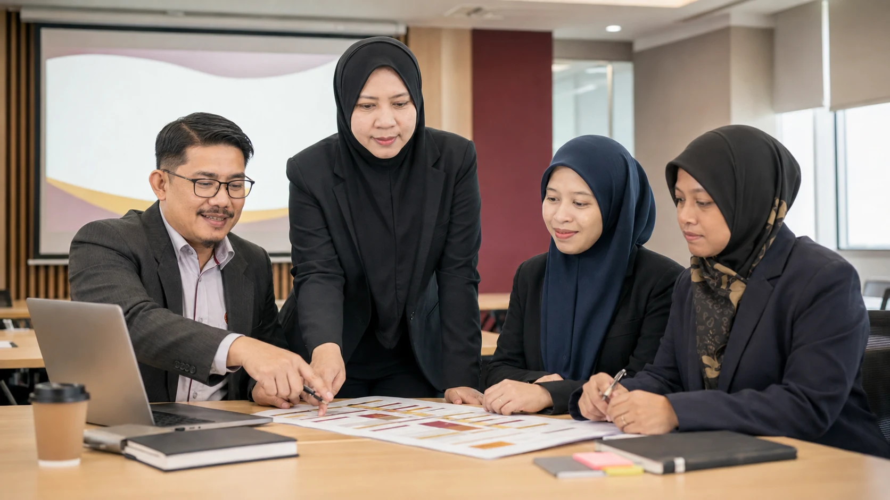

TENTATIF PROGRAM · 26 OGOS 2026
Satu hari yang padat, praktikal dan tersusun.
Ikuti lima sesi daripada asas AI dan pembinaan prompt kepada analisis data, Gemini Notebook, multimedia serta penggunaan AI yang selamat.

Jadual Kursus
Lima sesi.
Satu aliran pembelajaran.
26OGOS
2026
2026
Pendaftaran
Pendaftaran Peserta
Semakan kehadiran dan persediaan peralatan.
Sesi 1
Pengenalan AI dan AI sebagai Pembantu Digital
Asas AI generatif · Pemilihan alat · Produktiviti kerja
Buka bahan Sesi 1 →
Rehat
Minum pagi
Sesi 2
Prompt Engineering untuk Tugasan Harian
Formula prompt · Prompt Builder · Latihan amali
Buka bahan Sesi 2 →
Rehat
Solat Zuhur dan makan tengah hari
Sesi 3
Analisis Data dengan AI dan Sokongan Keputusan
Data rasmi · Visualisasi · Peramalan
Buka bahan Sesi 3 →
Sesi 4
Gemini Notebook, Studio dan Multimedia
Sumber sah · Output Studio · Komunikasi pelbagai format
Buka bahan Sesi 4 →
Sesi 5
Penggunaan AI Secara Selamat dan Bertanggungjawab
Privasi · Pengesahan fakta · Semakan manusia
Buka bahan Sesi 5 →
Penutup
Rumusan dan Sesi Soal Jawab
Refleksi pembelajaran dan langkah seterusnya.
Tentatif tertakluk kepada perubahan mengikut keperluan program.
Kembali ke atas tentatif ↑
26 OGOS 2026 · FAKULTI KOMPUTERAN
Bersedia bekerja
Bersedia bekerja
lebih pintar?
Sediakan komputer riba dan ikuti latihan secara langkah demi langkah.
Teroka Bahan Pengajaran →